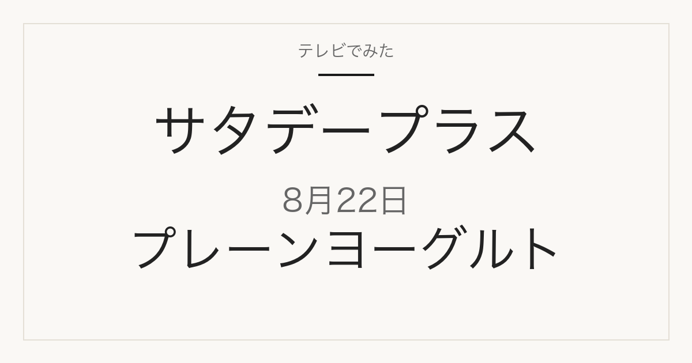

1位／番組掲載価格 313円
よつ葉乳業
北海道十勝生乳100 プレーンヨーグルト とろっとなめらか
メーカー商品です。スーパーや通販で扱われます。

400g×6個のセットで、番組掲載の単品とは販売単位が違います。冷蔵商品です。
テレビ紹介商品の記録メディア
2026年8月22日（土）放送
「ひたすら試してランキング」で調査された5品

2026年8月22日放送のサタデープラス「ひたすら試してランキング」は箱型プレーンヨーグルト。清水アナウンサーが10時間以上かけて5商品を比較し、ベスト5を選んでいます。番組掲載価格は313円から430円まで幅があります。
この記事には広告・アフィリエイトリンクが含まれます。順位・商品名・番組掲載価格は番組公式情報で確認しています。価格は2026年8月22日時点の番組調べで、現在の販売価格・在庫・取り扱いは変わります。1個あたりの価格は番組掲載価格と商品名の内容量から算出したものです。
味や使い勝手だけでなくコストパフォーマンスが項目に入っているため、上位が最安とは限りません。価格は下の一覧で確認してください。
| 順位 | ブランド | 商品名 | 番組掲載価格 |
|---|---|---|---|
| 1位 | よつ葉乳業 | 北海道十勝生乳100 プレーンヨーグルト とろっとなめらか | 313円 |
| 2位 | 共進牧場 | リッチ ザ ヨーグルト 砂糖不使用 | 430円 |
| 3位 | 明治 | 明治ブルガリアヨーグルト LB81プレーン HOME MADE STORY | 345円 |
| 4位 | YUDAミルク | 毎日食べたい 湯田ヨーグルト | 400円 |
| 5位 | 明治 | 明治ブルガリアヨーグルト LB81プレーン | 324円 |
1位／番組掲載価格 313円
よつ葉乳業
メーカー商品です。スーパーや通販で扱われます。
400g×6個のセットで、番組掲載の単品とは販売単位が違います。冷蔵商品です。
2位／番組掲載価格 430円
共進牧場
メーカー商品です。スーパーや通販で扱われます。
3位／番組掲載価格 345円
明治
メーカー商品です。スーパーや通販で扱われます。この回では明治の商品が2品ランクインしています。

400g×6個のセットで、番組掲載の単品とは販売単位が違います。冷蔵商品です。
4位／番組掲載価格 400円
YUDAミルク
メーカー商品です。スーパーや通販で扱われます。
5位／番組掲載価格 324円
明治
メーカー商品です。スーパーや通販で扱われます。この回では明治の商品が2品ランクインしています。
このランキングで最も安いのはよつ葉乳業「北海道十勝生乳100 プレーンヨーグルト とろっとなめらか」の313円、最も高いのは共進牧場「リッチ ザ ヨーグルト 砂糖不使用」の430円です。
通販では番組と販売単位が違うことがあります。商品名だけでなく内容量と入り数を合わせて確認してください。
「混ぜるだけ！ヨーグルトドレッシング」の材料です。
2026年8月22日放送の1位は、よつ葉乳業「北海道十勝生乳100 プレーンヨーグルト とろっとなめらか」です。番組掲載価格は313円でした。
①そのままの味 ②ハチミツとの相性 ③フルーツとの相性 ④コストパフォーマンス ⑤アレンジ力を清水アナウンサーが調査したランキングです。
スーパーや通販で扱われるメーカー商品が中心です。放送から時間が経っているため、販売が終了している場合があります。
MBS「サタプラ」ひたすら試してランキング 箱型プレーンヨーグルト
順位・商品名・番組掲載価格は2026年8月22日現在の番組公式情報によります。